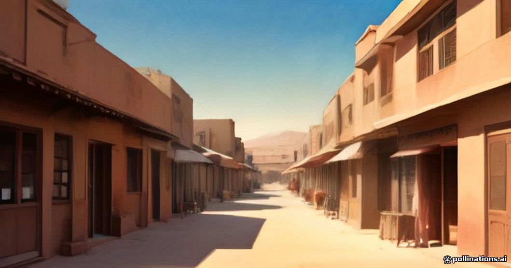

When you drive from Marrakesh to the Erg Chebbi dunes, you cross the High Atlas mountains, wide plateau regions, and river valleys before reaching the desert edge. While major towns like Ouarzazate and Errachidia have fully equipped regional hospitals, remote stretches between Tineghir and Erfoud have limited medical infrastructure. Understanding what is locally available helps you pack responsibly without causing unnecessary anxiety.
Pharmacies (marked with a glowing green cross) are common in Morocco and staffed by knowledgeable, often French-speaking pharmacists who can diagnose minor ailments and dispense standard medications without a prior doctor's visit. However, specialized medications, English-speaking physicians, and advanced trauma care become scarcer the further east you travel from Marrakesh.
Pharmacies and Over-the-Counter Care
Moroccan pharmacie networks are reliable for common travel issues like stomach bugs, mild dehydration, motion sickness on the Tichka pass, and basic first aid. Pharmacists often act as first-line medical providers for tourists, recommending and selling basic pharmaceuticals directly across the counter.
If you rely on specific prescription drugs, bring an adequate supply plus an extra week's buffer in your carry-on luggage. Generic equivalents for common Western drugs exist, but brand names vary, and rare formulations may require a trip to a larger city like Errachidia or Meknes.
- Carry your prescription details or generic chemical names.
- Look for the green illuminated cross sign in towns.
- Nights and weekends operate on a rotating on-call schedule (pharmacie de garde).
Hospitals and Clinics by Region
Marrakesh has private international clinics with English-speaking doctors and modern diagnostic equipment. Once you cross the Tichka pass toward Ouarzazate, regional hospitals handle general care and stabilization, but severe trauma or complex surgeries usually require transfer back to Marrakesh or Fez.
In desert towns like Merzouga and Rissani, local medical centers provide basic first aid, injections, and wound care. For specialized treatment, patients are typically transferred northward to Errachidia provincial hospital, roughly two hours away by road.
- Marrakesh: Full private and public hospital networks.
- Ouarzazate / Tineghir: Regional hospitals for stabilization.
- Merzouga / Rissani: Basic local clinics and pharmacies only.
Managing Pre-Existing Conditions and Gear
Travelers managing chronic conditions such as diabetes, severe allergies, or cardiac issues should take extra precautions. Extreme desert heat can alter the efficacy of certain medications, and blowing sand can complicate contact lens wear or respiratory sensitivities.
If you travel with critical medical equipment like CPAP machines, check our guide on CPAP machines and heavy electronics in Sahara camps to ensure your vehicle or camp has steady power arrangements.
- Store insulin and temperature-sensitive drugs in insulated coolers.
- Bring extra saline drops for dry desert air and dust.
- Inform your desert tour driver immediately if an issue arises.
Travel Insurance and Emergency Evacuation
Standard travel insurance policies often cover medical repatriation, but it is vital to read the fine print regarding adventure activities, altitude limits in the Atlas mountains, and remote vehicle transport. Keep your policy number, 24/7 assistance hotline, and insurance documents easily accessible.
For broader preparation details, review our desert tour travel insurance overview before departure. While serious incidents are rare on standard routes, knowing your policy details removes guesswork during a crisis.
- Verify your policy covers emergency medical evacuation.
- Keep digital and printed copies of insurance documents.
- Ensure coverage extends to remote overland driving.
| Location | Medical Level | Key Resource |
|---|---|---|
| Marrakesh | Advanced | Private international clinics and English-speaking doctors |
| Ouarzazate | Moderate | Regional hospital and multiple town pharmacies |
| Tineghir / Boumalne | Basic-Moderate | Local health centers and standard town pharmacies |
| Erfoud / Rissani | Basic | District clinics and localized pharmacies |
| Merzouga / Erg Chebbi | Minimal | Basic village clinic; major care requires Errachidia |

Illustration, not a photograph — for the real thing, you'll have to stand on the ridge yourself.
Quick answers
A few follow-up questions travelers ask about this.
Can I buy prescription medicine without a doctor's visit in Morocco?
Many common maintenance and acute medications can be purchased directly from local pharmacists without a prescription, though controlled substances and specialized drugs strictly require local medical authorization.
What should I do if I get sick while staying at an Erg Chebbi desert camp?
Inform your camp host or driver immediately. Our desert camps maintain basic first aid supplies, and staff can coordinate vehicle transport back to Merzouga village or the nearest clinic if professional medical attention is required.
Are English-speaking doctors easy to find along the route?
English is widely spoken in Marrakesh and by most tour guides and camp managers, but rural doctors and pharmacists in the south typically communicate in Arabic, French, or Berber.
Planning your own route?
Tell us your dates and what matters to you — we'll answer with a straight recommendation, not a brochure.
Send an inquiry See the itineraries